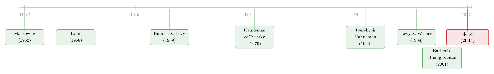

前景理论想「废掉」均值-方差，却反被它收编
本文读的是 Levy & Levy (2004, Review of Financial Studies)：前景理论 (prospect theory, PT) 的三大发现——按财富变化决策、损失区间风险偏好、概率被主观扭曲——几乎逐条否定了均值-方差 (mean-variance, MV) 分析的根基；可一旦允许在资产之间分散投资，PT 的有效集竟然几乎完全落在 MV 有效前沿之上。结论反直觉得令人不安：你完全可以用 Markowitz 那套老掉牙的优化算法，去给一个「前景理论投资者」构造有效组合。
1 一场本该你死我活的对峙
先把战线画清楚。
现代金融里最深入人心的投资决策规则，大概就是 Markowitz (1952a)-Tobin (1958) 的均值-方差规则。它的逻辑链条非常干净：当收益率服从正态分布时，任何一个追求期望效用最大化、且厌恶风险的投资者，他的最优选择必然落在 MV 有效前沿上。正因如此，MV 框架才成了 Sharpe (1964)-Lintner (1965) 资本资产定价模型 (CAPM) 的地基，也成了实务中构造有效组合的标准流水线。
但这条逻辑链里，藏着两个雷打不动的前提：期望效用最大化与风险厌恶。
然后 Kahneman and Tversky (1979) 来了。他们用一连串实验，把这两个前提系统性地、而且是「一致地」证伪了。前景理论的三个核心发现，几乎是冲着 MV 的命门去的：
- (a) 人按财富的「变化」而非「总量」做决策——这直接和期望效用理论冲突；
- (b) 风险厌恶并不全局成立——面对损失时，人是风险偏好的（这就是那条著名的 S 形价值函数：盈利端凹、亏损端凸）；
- (c) 人会系统性地扭曲客观概率。后来 Tversky and Kahneman (1992) 把它扩展成累积前景理论 (cumulative prospect theory, CPT)，扭曲的是累积概率而不是概率本身，从而避免了对一阶随机占优的违反。
你把这三条摆在一起看，会觉得 MV 已经没救了。MV 假设期望效用最大化和风险厌恶，可 (a)(b) 把这两条都掀了；MV 默认你用的是客观（正态）分布，可 (c) 告诉你——就算客观分布是正态的，投资者主观感知到的分布也不再是正态的。三处全是硬伤。
于是一个尖锐的问题摆在桌面上：前景理论是不是意味着，金融学的这块地基——均值-方差——该被推倒重来了？
顺带一提，这两位作者（正是 Haim Levy 与 Moshe Levy）在另一项实验里，反过来质疑了 PT 的 S 形价值函数本身，转而支持 Markowitz (1952b) 那条反 S 形的价值函数（关于这一点，可参见《亏时求稳，赚时博大：一张「反 S 形」效用，替市场组合翻了案》）。有意思的是，本文的主结论对这一族反 S 形函数同样成立。
2 真正关键的一步：把「偏好」翻译成「占优」
要回答上面那个问题，作者没有去比拼谁的效用函数更对，而是绕到了一个更高的层面——随机占优 (stochastic dominance, SD)。
随机占优的妙处在于：它不需要你知道投资者具体长什么样的效用函数，只要知道他属于某一大类偏好，就能判断 A 是不是被所有这类人一致地偏好于 B。形式上，给定两个随机变量、以及一个效用函数族 \(U\)，我们关心的是在什么条件下，对所有 \(u \in U\) 都有
$$ E[u(\varepsilon_1)] < E[u(\varepsilon_2)]. $$
不同的 \(U\) 给出不同的占优概念：
- \(U\) 是所有递增函数 → 一阶随机占优 (first-degree SD, FSD)；
- \(U\) 是所有递增且凹的函数 → 二阶随机占优 (second-degree SD, SSD)；
- 再加上正的三阶导（偏好正偏度）→ 三阶随机占优 (TSD)。
这几条都是教科书里的老朋友。但真正的新武器，是 Levy and Wiener (1998) 提出的前景随机占优 (prospect SD, PSD)：把 \(U\) 取成所有 S 形价值函数的族——也就是 PT 那一族（亏损端凸 \(U''>0\)、盈利端凹 \(U''<0\)）。
下面这几个判据，作者要在全文反复使用，值得逐条写清楚。
MV 规则：\(F\) 占优 \(G\)，当且仅当
$$ \mu_F \ge \mu_G \quad \text{and} \quad \sigma_F \le \sigma_G, $$
且至少一个不等式严格成立。
FSD：
$$ F(x) \le G(x) \quad \text{for all } x. $$
直觉是 \(F\) 的累积分布整条都压在 \(G\) 下面（同样的收益水平，\(F\) 拿不到的概率更小），因此任何递增效用的人都更喜欢 \(F\)，无论他对方差、偏度怎么看。
SSD：
$$ I_{SSD}(x) \equiv \int_{-\infty}^{x} [G(z) - F(z)]\, dz \ge 0 \quad \text{for all } x. $$
而 PSD——本文的主角——长成这样：
把它和 SSD 摆在一起对比，差别一目了然：SSD 要求从 \(-\infty\) 累积到任意 \(x\)，面积都非负；而 PSD 只要求那些「跨过 0」的区间 \([x,\bar x]\)（\(x\le 0\le\bar x\)）上面积非负。这正对应 S 形函数在 0 这个点上「拐弯」的事实——亏损一侧凸、盈利一侧凹，于是 0 成了整个判据的轴心。
几何上：\(F\) 以 PSD 占优 \(G\)，当且仅当对任何一个跨越参考点的区间，两条 CDF 之间「\(G>F\) 的正面积」减去「\(F>G\) 的负面积」是正的。
为了让读者对 S 形偏好「到底偏好什么」有个具体感受，作者举了一个两点博彩的例子（论文 Table 1）。取 Tversky and Kahneman (1992) 估计的「典型」参数，价值函数为
$$ V(x) = \begin{cases} x^{a} & x \ge 0 \\ -\lambda(-x)^{b} & x < 0 \end{cases} $$
其中 \(a = b = 0.88\)、\(\lambda = 2.25\)（\(\lambda\) 就是那个著名的「损失厌恶」系数：同样大小，亏损带来的痛苦是盈利带来的快乐的 2.25 倍）。代进去算，两个博彩的价值分别是 \(EV_F = 0.190\)、\(EV_G = -0.703\)，于是这个具体的投资者偏好 \(F\)。但 PSD 的力量在于：它能证明所有 S 形价值函数的人——不管参数是多少、甚至函数形式是否完全一样——都偏好 \(F\)。这就是占优分析相比逐个效用函数求解的优势所在。
到这里，作者已经悄悄把「PT 投资者的选择」翻译成了一个纯粹的几何问题。剩下的，就是去比较两张「有效集」的地图。
3 反转：单看两两比较，MV 与 PSD 毫无关系；可一旦能分散，它们几乎重合
接着，一个自然的问题是：MV 占优和 PSD 占优，到底是什么关系？
单看两两比较，答案令人沮丧：它们之间没有任何固定关系。你可以构造出「\(F\) 以 MV 占优 \(G\)、却不以 PSD 占优」的正态分布例子（\(F\) 均值更高、方差更低，但 PSD 的面积条件不满足）；也可以构造出反过来的例子（\(F\) 以 PSD 占优 \(G\)，却因为方差更大而不被 MV 占优）。两个判据各说各话。
如果故事停在这里，那 MV 对 PT 投资者确实没什么用。
但真正关键的一步，是把场景从「两两比较」换成「组合选择」。当投资者可以在众多资产之间自由分散时，局面彻底翻转。作者在三条标准假设下证明了主定理：
- 假设 1：收益服从正态分布；
- 假设 2：组合的构造没有限制（可自由配权）；
- 假设 3：没有两个资产完全相关，\(|R_{ij}|<1\)。
定理 1（用客观概率）：(i) PSD 有效集是 MV 有效集的子集；(ii) MV 有效集中被排除在 PSD 有效集之外的那一段，至多是从最小方差组合，到「从原点 \((\mu=0,\sigma=0)\) 向前沿作的切点」之间的那一段（论文 Figure 3 中的 \(Oa\) 段）。
定理 2（允许概率扭曲）：只要主观概率变换不违反 FSD（CPT 的变换正属于此类），PSD 有效集仍是 MV 有效集的子集。
把这两条合起来读，就是论文摘要那句反直觉的话：尽管 PT 和 MV 在假设上水火不容，PT 的有效集却几乎完全落在 MV 有效前沿上。
3.1 为什么子集关系成立？——一条经由 FSD 的桥
定理 1 的 (i) 其实直觉极其朴素，证明的核心是一句话：任何 MV 无效的组合，必然 PSD 无效。
为什么？取一个 MV 有效前沿内部的组合 \(F'\)（它无效）。在前沿上，正对着它的正上方，一定存在一个组合 \(F\)：标准差和 \(F'\) 一样，但期望收益更高。\(F\) 显然以 MV 占优 \(F'\)。更妙的是——既然 \(F\) 与 \(F'\) 标准差相同、只是均值更高，在正态分布下 \(F\) 的整条 CDF 不过是 \(F'\) 的 CDF 向右平移，于是
$$ F(x) \le F'(x) \quad \text{for all } x, $$
这正是 FSD。而由定义可知，
$$ \text{FSD} \Rightarrow \text{SSD}, \qquad \text{FSD} \Rightarrow \text{PSD}. $$
也就是说，\(F\) 不仅以 MV、还以 FSD 占优 \(F'\)；既然 FSD 蕴含 PSD，\(F'\) 当然就是 PSD 无效的。
这条经由 FSD 的桥，也正是定理 2 能成立的原因。CPT 的概率变换 \(T(\cdot)\) 是单调的（\(T'(F)>0\)，\(T(0)=0\)，\(T(1)=1\)），它保持 FSD：若 \(F\) 以 FSD 占优 \(F'\)，则 \(T(F)\) 仍以 FSD 占优 \(T(F')\)。所以哪怕投资者主观扭曲了概率，「\(F\) 占优内部组合 \(F'\)」这件事依然成立。子集关系，稳如磐石。
3.2 为什么被排除的只有「底部那一小段」？
定理 1 的 (ii) 更精细，也更漂亮。考虑最小方差组合 \(O\)，以及它正上方一点点的组合 \(O'\)。从 \(O\) 走到 \(O'\)，期望收益上升了，但标准差的增加只是二阶小量（最小方差点处前沿的切线是竖直的）。这一丁点方差的增加，足以让 \(O'\) 无法以 MV 占优 \(O\)（因为 \(\sigma_{O'}>\sigma_O\)），却挡不住 PSD：\(O'\) 仍可能以 PSD 占优 \(O\)，于是 \(O\) 是 PSD 无效的。
可是越往前沿上方走，前沿越平（斜率 \(\frac{d\mu}{d\sigma}\) 递减），同样一份期望收益的增加，要付出越来越大的方差代价。到某个点之后，相邻组合之间再也构不成 PSD 占优。作者证明：这段「PSD 无效」的区间，至多就是最小方差组合 \(O\) 到原点切点 \(a\) 之间的 \(Oa\) 段——也就是 \(\mu/\sigma\) 还在上升的那一段。切点 \(a\) 之上、\(\mu/\sigma\) 开始下降的整条前沿，全都既 MV 有效、又 PSD 有效。这就是「几乎完全重合」里那个「几乎」的全部含义：差的，只是底部一小截。
3.3 扭曲概率，会把这块「干净」打破吗？
会，但只打破了 (ii)，没打破子集关系。作者举了个干净的例子：两个都在 MV 前沿上的正态组合，\(\mu_F=0.25,\ \sigma_F=0.50\)；\(\mu_G=0.23,\ \sigma_G=0.05\)。用客观概率时 \(F\) 是 PSD 有效的（因为它落在切点 \(a\) 右侧、\(\mu/\sigma\) 递减的那段）。可一旦施加一个单调且保持 FSD 的变换 \(T(F)=F^{0.2}\)，\(F\) 就变成 PSD 无效了——\(G\) 反过来占优了它。原因在于：概率变换会改变投资者感知到的均值和标准差，于是 (ii) 里「前沿光滑、斜率递减」的几何直觉不再成立，PSD 无效的组合也就不再被钉死在 \(Oa\) 段。但无论如何，PSD 有效集仍是 MV 有效集的子集——只是可能更小、且位置不再整齐。
3.4 偏度去哪了？
读到这里，懂行的读者一定会追问：你们整篇都在谈均值和方差，可 PT 明明在乎偏度啊（S 形函数对正偏度有天然偏好）。作者老老实实分了三种情形回应：
- 正态分布（定理 1）：根本没有偏度。而且不止 PSD，连 FSD、SSD、TSD 的有效集都和 MV 有效前沿完全重合。
- 变换后的正态分布（定理 2）：分布不再正态，可能带非零偏度和更高阶矩——但子集关系照旧。
- 对数正态分布（附录 B 的定理 3，天然正偏）：结论与正态情形「非常相似」。
也就是说，结论并不依赖于「正态」这个特定的函数形式——这一点让整个结果显得相当稳健。
4 文献脉络
把这条线索捋一遍，会看到两条原本平行的河流如何在这篇论文里交汇。
一条是组合选择与随机占优这条「正统」河流：Markowitz (1952a) 开了均值-方差的头，Tobin (1958) 补上了流动性偏好与风险态度，Hanoch and Levy (1969) 把 SD 这套工具系统化（证明了正态下 MV 等价于 SSD），Sharpe (1964)-Lintner (1965) 把它推上 CAPM 的神坛，最后 Levy (1998) 把随机占优写成了一本教科书。

另一条是行为金融这条「叛逆」河流：Kahneman and Tversky (1979) 用前景理论掀翻了期望效用，Quiggin (1982) 提出了「预期效用」式的概率加权，Tversky and Kahneman (1992) 进一步给出累积前景理论、用累积概率变换避开了对 FSD 的违反。这条河流随后涌进了金融学的腹地：Benartzi and Thaler (1995) 用它解释股权溢价之谜，Barberis, Huang, and Santos (2001) 用它做资产定价。
这篇论文站的位置，恰好是两条河的汇流点。真正把它们焊接起来的，是 Levy and Wiener (1998) 提出的前景随机占优 (PSD)——它把「S 形偏好」装进了随机占优的语言里。Levy & Levy (2004) 做的，就是用这个新工具去丈量 PT 与 Markowitz 的距离，得出了「几乎重合」这个谁都没料到的答案。
顺便说，这条行为金融的支流后来枝繁叶茂：有人从基金资金流里「反推」投资者是不是真按 PT 决策（可参见《用真金白银投出来的前景理论》），也有人把「偏爱彩票」写进资产定价、解释为什么有人甘愿不分散（可参见《为什么有人甘愿「不分散」？》）。
5 评论与延伸（Q&A + 研究方向）
(a) 几个可能的疑问
Q：PSD 是 SSD 的子集还是反过来？为什么不能直接套用 SSD 的老结论？
都不是。FSD 同时蕴含 SSD 和 PSD（所以两者都是 FSD 有效集的子集），但 PSD 和 SSD 之间没有显然的数学包含关系——这正是论文要专门去推导两者关系的原因。直觉上，SSD 对应「全局风险厌恶」，PSD 对应「亏损端风险偏好、盈利端风险厌恶」的 S 形，二者刻画的是不同的人。
Q：「子集关系」到底强不强？会不会 PSD 有效集小到只剩一个点？
子集关系本身（定理 1(i)、定理 2）是很强的全称命题：所有 MV 无效的组合都 PSD 无效，没有例外。它的实务含义是——你不会因为用 MV 算法而把任何 PSD 有效的组合漏掉。至于 PSD 有效集会不会「过小」，定理 1(ii) 给了上界：在客观概率下，被排除的至多是底部 \(Oa\) 一段，所以剩下的 PSD 有效集相当大、几乎就是整条前沿。
Q：为什么是从「原点」作切线，而不是从无风险利率作切线（像 CAPM 那样）？
因为 PT 的价值函数定义在「财富变化」上，参考点是 0（\(\mu=0\)）。切点 \(a\) 是从 \((\mu=0,\sigma=0)\) 这个原点向前沿作的切线的切点，对应的是 \(\mu/\sigma\) 比值（而非夏普比率）最大的那个组合。它和 CAPM 里从无风险利率出发的资本市场线不是一回事，反映的是 PT 投资者关心的是相对参考点的盈亏。
Q：定理只对正态分布成立，可大家都知道短期收益是肥尾的，这个限制致命吗？
作者自己也承认正态只是近似——脚注里点了 Fama (1963)、Mandelbrot (1963) 等关于肥尾的工作，并说明正态近似只对「长于一个月、短于若干年」的投资期限大致成立。他们的对冲手段是附录 B 的对数正态情形（天然正偏），结论「非常相似」，所以正态不是结论的命脉。但严格说，肥尾或极端跳跃下结论是否依旧，论文没有覆盖。
Q：允许概率扭曲（定理 2）之后，结论是不是「缩水」了？
子集关系没缩水——PSD 有效集仍在 MV 有效集之内。缩水的是「可定位性」：客观概率下能把 PSD 无效组合钉死在 \(Oa\) 段，扭曲之后不行了，因为变换改变了感知到的均值和标准差，前沿在投资者眼中不再光滑、斜率不再单调递减。换句话说，MV 算法仍然「够用」，只是不再「整齐」。
Q：那这篇文章到底替谁说了话——MV 还是 PT？
两边都加强了。对 MV：它被证明对一个更宽的偏好族（S 形价值函数，而不只是凹的风险厌恶效用）依然有效；对 PT：它第一次被配上了一套现成的、可计算的有效组合构造算法（直接借 Markowitz 的优化器）。这正是论文最漂亮的地方——它没有让一方碾压另一方，而是让两个对立框架握了手。
(b) 几个可能的研究问题与提案
1. 把 PSD 有效集搬到公司债 / 信用市场。
【经济故事】公司债收益高度负偏（违约时巨亏、平时小赚），正是 S 形偏好该大显身手的资产类别；本文却只在正态/对数正态下证明了结论。一个自然的问题是：当真实分布严重负偏、带跳跃时，PSD 有效集还会「几乎落在」MV 前沿上吗，还是会被甩开一大块？
【可行性】中。数据可用（TRACE 成交、评级、违约记录都现成），可以用历史收益的经验分布直接数值检验 PSD 与 MV 有效集的重合度。难点在于负偏 + 肥尾下没有解析结论，只能靠模拟，结论的普适性会打折扣。
2. 概率扭曲下，PSD 无效段的「位置」由什么决定？
【经济故事】定理 2 说一旦扭曲概率，PSD 无效组合就不再被钉在 \(Oa\) 段，但没说它跑到哪去了。如果能把「扭曲函数的形状」映射到「PSD 无效段在前沿上的位置」，就能反过来从观察到的持仓偏离，推断投资者的概率加权函数。
【可行性】中。理论上可做（给定 CPT 的权重函数，数值求 PSD 有效集即可）；实证上若要从真实持仓反推权重函数，需要个体层面的组合数据，识别较难，doable 但不轻松。
3. 外资持有人是不是更「S 形」？
【经济故事】如果不同投资者群体的参考点和损失厌恶系数 \(\lambda\) 不同，他们的 PSD 有效集就会落在 MV 前沿的不同位置。外资相对本地投资者，参考点（本币 vs. 外币计价）和损失厌恶可能系统性不同，这会预测他们在同一前沿上选择不同的点。
【可行性】中偏低。需要分投资者类型的持仓 + 收益分布数据（如某些市场的外资持仓明细），并要先把汇率折算进「财富变化」。识别可行，但把 \(\lambda\) 干净地估出来很难。
4. 流动性冲击会不会让两个有效集「分家」？
【经济故事】本文的假设 2 是「组合无限制构造」。但流动性危机里，卖出会有价格冲击、配权受限——这恰好破坏了那个让 MV 与 PSD 重合的关键条件。一个有意思的猜想是：流动性越差的时期，PT 有效集与 MV 前沿的偏离越大，因为「自由分散」这条桥被掐断了。
【可行性】中。可用危机期 vs. 平时的公司债数据做对照（关于危机期公司债流动性的度量，可参见《差点死掉的那个市场》）。难点是把「交易成本/配权约束」显式写进有效集的定义。
5. 反 S 形（Markowitz 价值函数）下的对称结论。
【经济故事】作者提到主结论对反 S 形价值函数也成立（证明备索）。把这块补全、并和 S 形情形并排比较，能说清「到底是 S 形这个特定形状，还是仅仅『参考点 + 单调性』在驱动重合」。
【可行性】高。纯理论推导，工具（PSD/Markowitz 占优 + SD 框架）都现成，是一篇干净的扩展型理论小品。
6 我的判断
这篇论文的贡献，在我看来是「概念性」的而非「技术性」的——它的证明并不算难（核心就是 FSD \(\Rightarrow\) PSD 这座桥），难的是想到去搭这座桥。在一个普遍认为「行为金融 = 推翻传统框架」的年代，作者反其道而行，证明了被推翻的那套优化机器其实对行为偏好依然管用。这种「和解」式的结果，比再多一个「传统模型错了」的结果更有价值，因为它告诉实务界：不必为了拥抱 PT 就丢掉手里那台跑了半个世纪的 Markowitz 优化器。
对识别（这里是对结论稳健性）的担忧也很清楚，作者自己大半都点到了：其一，三条定理都建立在正态（或对数正态）之上，而真正最该用 S 形偏好定价的资产——期权、公司债、灾难险——恰恰是分布最不正态、最肥尾、最负偏的；附录 B 的对数正态只是「相似」，不是「覆盖」。其二，假设 2 的「无限制分散」是整座桥的桥墩，一旦遇上做空限制、流动性约束、交易成本，重合还成不成立，论文没有回答。其三，定理 2 之后「可定位性」的丧失，意味着一旦认真对待 CPT 的概率加权，「几乎重合」里那个「几乎」可能比正态情形大得多。
后续我最想看到的，是把这套有效集分析搬到真实的、非正态的资产收益上做数值检验——尤其是公司债。如果在那里两个有效集依然「几乎重合」，那本文的结论就真的稳；如果分家了，那分家的程度本身，就是一把丈量「分布有多不正态」的尺子。
参考文献
- Barberis, N., M. Huang, and T. Santos (2001). Prospect Theory and Asset Prices. Quarterly Journal of Economics 116(1), 1–53.
- Benartzi, S., and R. Thaler (1995). Myopic Loss Aversion and the Equity Premium Puzzle. Quarterly Journal of Economics 110(1), 73–92.
- Fama, E. F. (1963). Mandelbrot and the Stable Paretian Hypothesis. Journal of Business 36, 420–429.
- Hanoch, G., and H. Levy (1969). The Efficiency Analysis of Choices Involving Risk. Review of Economic Studies 36, 335–346.
- Kahneman, D., and A. Tversky (1979). Prospect Theory: An Analysis of Decision under Risk. Econometrica 47, 263–291.
- Levy, H. (1998). Stochastic Dominance: Investment Decision Making Under Uncertainty. Kluwer Academic, Boston.
- Levy, H., and Z. Wiener (1998). Stochastic Dominance and Prospect Dominance with Subjective Weighting Functions. Journal of Risk and Uncertainty 16, 147–163.
- Levy, M., and H. Levy (2002b). Prospect Theory: Much Ado About Nothing? Management Science 48, 1334–1349.
- Lintner, J. (1965). Security Prices, Risk, and the Maximal Gains from Diversification. Journal of Finance 20, 587–615.
- Mandelbrot, B. (1963). The Variation of Certain Speculative Prices. Journal of Business 36, 394–419.
- Markowitz, H. M. (1952a). Portfolio Selection. Journal of Finance 7, 77–91.
- Markowitz, H. M. (1952b). The Utility of Wealth. Journal of Political Economy 60, 151–156.
- Quiggin, J. (1982). A Theory of Anticipated Utility. Journal of Economic Behavior and Organization 3, 323–343.
- Sharpe, W. F. (1964). Capital Asset Prices: A Theory of Market Equilibrium. Journal of Finance 19, 425–442.
- Tobin, J. (1958). Liquidity Preferences as a Behavior Toward Risk. Review of Economic Studies 25, 65–85.
- Tversky, A., and D. Kahneman (1992). Advances in Prospect Theory: Cumulative Representation of Uncertainty. Journal of Risk and Uncertainty 5, 297–323.